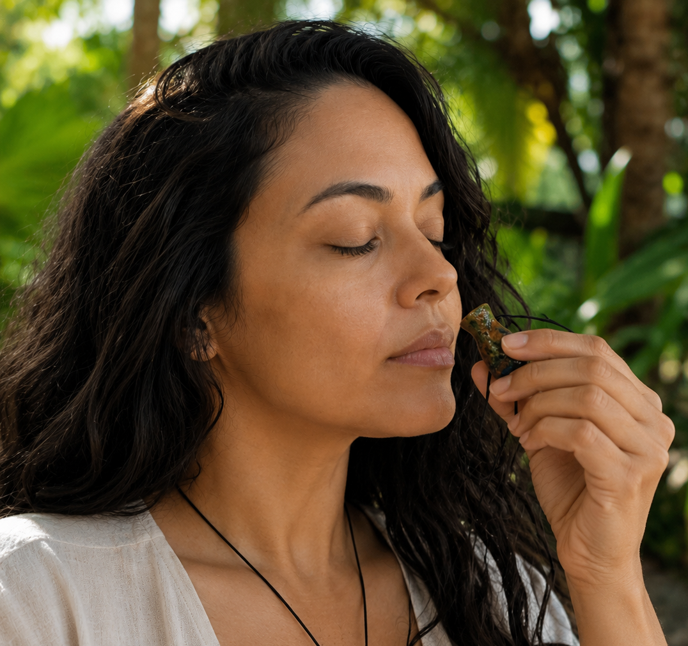

Um objeto de presença, não apenas de perfume
Diferente de um difusor de ambiente, o difusor pessoal é feito para ser usado junto ao corpo — como um pingente, um colar ou um pequeno objeto que você carrega no bolso ou na bolsa. Sua função vai além de espalhar um aroma agradável: ele age como um lembrete sensorial para desacelerar, respirar e se reconectar com o momento presente.
Feito em cerâmica porosa, ele absorve o óleo essencial e o libera lentamente, criando uma bolha de tranquilidade ao seu redor. Cada vez que você sente o aroma, é um convite para voltar ao corpo, à respiração, ao aqui e agora.
“O aroma não é apenas cheiro. É memória, é emoção, é um fio invisível que nos conecta ao que somos.”
O ritmo da vida moderna pede pausas sutis
Nunca estivemos tão conectados — e nunca estivemos tão dispersos. A sobrecarga de estímulos, as telas, o trabalho, as obrigações… tudo isso nos tira do centro. O difusor pessoal é uma resposta a esse cenário: uma ferramenta de autorregulação que você pode levar para qualquer lugar.
Seja no escritório, no transporte público, em uma reunião ou em casa, o aroma que emana do difusor é um lembrete de que você pode, a qualquer momento, fazer uma pausa. Respirar fundo. Se reconectar. Esse gesto, repetido ao longo do dia, é um treino de presença — e a presença é o antídoto para a ansiedade e o esgotamento.

O que muda quando você carrega um difusor
Os benefícios de um difusor pessoal vão além do aroma. Eles se estendem ao campo emocional, mental e energético. Cada óleo essencial tem uma vibração única, e carregá-lo junto ao corpo permite que essa vibração atue de forma contínua e sutil.
Calma e equilíbrio: óleos como lavanda, camomila ou olíbano ajudam a acalmar a mente e reduzir o estresse.
Foco e clareza: alecrim, hortelã-pimenta ou limão são aliados para momentos de concentração.
Proteção e ancoragem: breu branco, cedro ou patchouli fortalecem o campo energético e trazem presença.
Intuição e abertura: jasmim, sândalo ou cumarú abrem a percepção e a sensibilidade.
Um ritual simples, um impacto profundo
Usar um difusor pessoal não exige tempo extra nem preparação elaborada. Basta pingar algumas gotas do óleo essencial na peça, definir uma intenção e deixar que o aroma faça o trabalho sutil ao longo do dia.
Pela manhã: escolha um óleo que desperte sua energia e foque suas intenções para o dia.
Durante o trabalho: opte por aromas que mantenham a clareza e a calma.
À noite: prefira óleos relaxantes para sinalizar ao corpo que é hora de desacelerar.
Cada vez que sentir o aroma, respire fundo três vezes. Esse pequeno ritual transforma o ato de usar o difusor em um momento de presença — um presente que você dá a si mesmo ao longo do dia.
Um aliado para o corpo, a mente e o espírito
O difusor pessoal é muito mais que um objeto bonito — ele é uma ferramenta de cuidado real que você pode carregar com você nos momentos em que mais precisa.
Para gripes e congestionamentos: pingue algumas gotas de hortelã-pimenta ou eucalipto no difusor. Sempre que sentir o nariz entupido ou a respiração pesada, leve o difusor próximo ao nariz e inspire profundamente por alguns segundos. O aroma refrescante desobstrui as vias respiratórias e traz alívio imediato — sem precisar de sprays ou medicamentos.
Para ansiedade e estresse: a lavanda é uma das essências mais estudadas para acalmar o sistema nervoso. Com o difusor junto ao corpo, o aroma suave da lavanda age como um lembrete constante de que você pode desacelerar. Em momentos de tensão, respire fundo três vezes sentindo o aroma — é um gesto simples que sinaliza ao cérebro que é seguro relaxar.
Para foco e concentração: o alecrim ou o limão são excelentes aliados em momentos de estudo ou trabalho. O aroma estimulante mantém a mente alerta e clara, ajudando a manter a atenção nas tarefas sem a sensação de dispersão.
Para proteger a energia: essências como breu branco, cedro ou arruda ajudam a fortalecer o campo energético, especialmente em ambientes com muita circulação de pessoas ou carregados emocionalmente.
O difusor pessoal não substitui o cuidado médico, mas é um complemento poderoso — um aliado que você pode acessar a qualquer momento, em qualquer lugar, com um gesto simples e consciente.
Difusor Pessoal de Aromaterapia — Alquimia dos Aromas
Feito à mão em cerâmica, este difusor pessoal é o companheiro ideal para quem busca equilíbrio, presença e bem-estar no dia a dia. Disponível em modelos únicos, ele carrega consigo a energia do artesanal e a potência dos aromas naturais.
Conhecer o difusor →